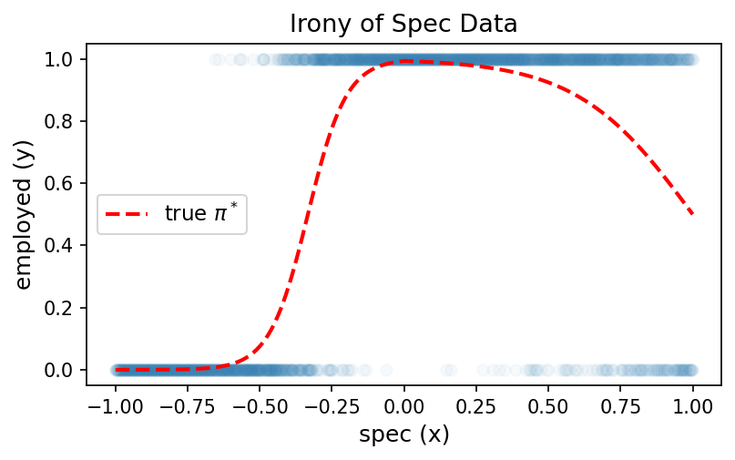
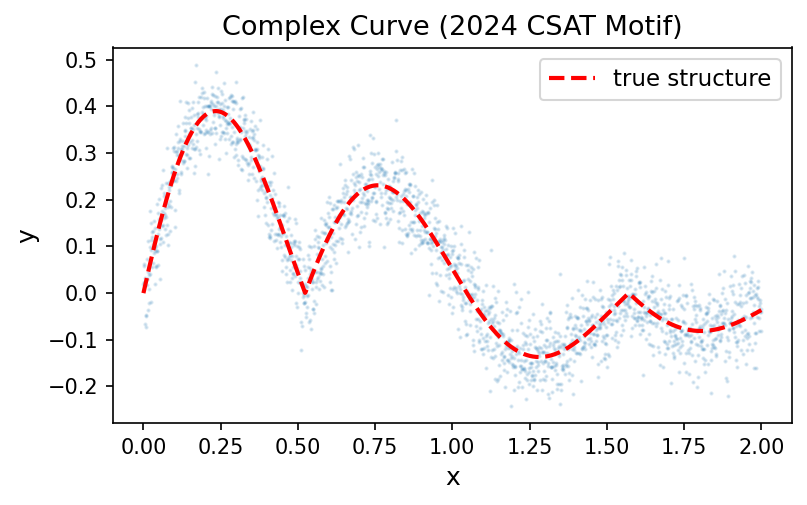

Quiz-12 (2026.04.15) // 범위: 06wk
1. 꺾인 직선 만들기
(1) 다음 코드의 출력을 고르시오.
relu = torch.nn.ReLU()
relu(torch.tensor(-3.0))(a) tensor(-3.0)
(b) tensor(3.0)
(c) tensor(0.0)
(d) tensor(-1.0)
(2) 다음 코드의 출력을 고르시오.
relu = torch.nn.ReLU()
relu(torch.tensor(5.0))(a) tensor(0.0)
(b) tensor(1.0)
(c) tensor(-5.0)
(d) tensor(5.0)
(3) 벡터 \(x = [-2,-1,0,1,2]\)가 주어졌다고 하자. torch.nn.Linear를 이용하여 \({\bf X}\)를 입력하면 첫 번째 열은 \(x\), 두 번째 열은 \(-x\)가 되도록 만들고 싶다. 주석 부분에 들어갈 코드를 작성하시오.
\[ {\bf X} = \begin{bmatrix} x_1 \\ x_2 \\ x_3 \\ x_4 \\ x_5 \end{bmatrix} = \begin{bmatrix} -2 \\ -1 \\ 0 \\ 1 \\ 2 \end{bmatrix} \quad \Longrightarrow \quad {\bf U} = \begin{bmatrix} x_1 & -x_1 \\ x_2 & -x_2 \\ x_3 & -x_3 \\ x_4 & -x_4 \\ x_5 & -x_5 \end{bmatrix} = \begin{bmatrix} -2 & 2 \\ -1 & 1 \\ 0 & 0 \\ 1 & -1 \\ 2 & -2 \end{bmatrix} \]
x = torch.tensor([-2.0, -1.0, 0.0, 1.0, 2.0])
X = x.reshape(-1, 1)
###################
# 여기를 잘 채워주세요 #
###################
U = lin(X)(4)
아래와 같이 \({\bf V}\)가 \(5 \times 2\) 행렬로 주어졌다고 하자.
\[ {\bf V} = \begin{bmatrix} v_{11} & v_{12} \\ v_{21} & v_{22} \\ v_{31} & v_{32} \\ v_{41} & v_{42} \\ v_{51} & v_{52} \end{bmatrix} = \begin{bmatrix} 1 & 2 \\ 3 & 4 \\ 5 & 6 \\ 7 & 8 \\ 9 & 10 \end{bmatrix}. \]
이 행렬을 이용하여 각 행 \((v_1,v_2)\)를 \(2v_1 - 3v_2 + 1\)로 바꾸고 싶다. 즉 아래와 같은 \(5 \times 1\) 행렬 \({\bf Y}\)를 만들고 싶다.
\[ {\bf Y} = \begin{bmatrix} 2v_{11}-3v_{12}+1 \\ 2v_{21}-3v_{22}+1 \\ 2v_{31}-3v_{32}+1 \\ 2v_{41}-3v_{42}+1 \\ 2v_{51}-3v_{52}+1 \end{bmatrix} = \begin{bmatrix} 2(1)-3(2)+1 \\ 2(3)-3(4)+1 \\ 2(5)-3(6)+1 \\ 2(7)-3(8)+1 \\ 2(9)-3(10)+1 \end{bmatrix} = \begin{bmatrix} -3 \\ -5 \\ -7 \\ -9 \\ -11 \end{bmatrix}. \]
주석 부분에 들어갈 코드를 작성하시오.
V = torch.tensor([
[1.0, 2.0],
[3.0, 4.0],
[5.0, 6.0],
[7.0, 8.0],
[9.0, 10.0]
])
###################
# 여기를 잘 채워주세요 #
###################
Y = lin(V)2. 스펙의 역설
아래 그림은 스펙(\(x\))과 취업여부(\(y\))의 관계를 나타낸 데이터이다. 빨간 점선은 실제 확률 \(\pi^*\)를 의미한다. 스펙이 높아질수록 취업확률이 증가하다가 다시 감소하는 형태임을 확인하라.

이 데이터를 적합하기 위해 아래 두 네트워크를 시도하였다.
net1 (실패한 풀이):
net1 = torch.nn.Sequential(
torch.nn.Linear(1, 1),
torch.nn.Sigmoid()
)net2 (개선된 풀이):
net2 = torch.nn.Sequential(
torch.nn.Linear(1, 2, bias=True),
torch.nn.ReLU(),
torch.nn.Linear(2, 1, bias=True),
torch.nn.Sigmoid()
)(1) net1이 이 데이터를 적합하는 데 실패하는 이유로 가장 적절한 것을 고르시오.
(a) 학습률(learning rate)이 너무 작기 때문
(b) 시그모이드 전의 값이 직선이므로 증가하다 감소하는 곡선을 표현할 수 없기 때문
(c) BCELoss 대신 MSELoss를 사용해야 하기 때문
(d) epoch 수가 부족하기 때문
(2) net2에 대해 다음 중 옳은 것을 모두 고르시오.
(a) net2[0]은 torch.nn.Linear(1, 2, bias=True)이다.
(b) net2[1]은 torch.nn.ReLU()이며, 학습할 파라미터가 없다.
(c) net2[2]에는 학습할 파라미터(weight, bias)가 있다.
(d) net2[3]에는 학습할 파라미터(weight, bias)가 있다.
(3) net1과 net2의 학습할 파라미터 수를 각각 구하시오.
(a) net1: 2개, net2: 5개
(b) net1: 2개, net2: 7개
(c) net1: 3개, net2: 7개
(d) net1: 2개, net2: 9개
(4) 다음 중 틀린 것을 고르시오.
(a) net2는 시그모이드 전의 값이 꺾인 직선이 될 수 있으므로 net1보다 표현력이 좋다.
(b) net2는 히든 노드가 2개이므로 시그모이드 전에 최대 2번 꺾인 직선을 표현할 수 있다.
(c) net2는 반드시 꺾인 직선만 표현할 수 있고, net1이 표현하는 단순 S자 곡선은 표현할 수 없다.
(d) net2는 위 그림의 데이터뿐 아니라 단순한 로지스틱 데이터도 적합할 수 있다.
3. 2024년수능30번
강의에서 아래와 같은 복잡한 곡선(2024 수능 미적 30번 모티브)을 적합하였다.
\[y_i = e^{-x_i} |\cos(3x_i)| \sin(3x_i) + \epsilon_i, \quad \epsilon_i \sim N(0, \sigma^2)\]

이 곡선은 여러 번 증가·감소를 반복하는 복잡한 형태이다. 아래 네트워크 (가)~(다)를 보고 물음에 답하시오.
(가)
net = torch.nn.Sequential(
torch.nn.Linear(1, 2),
torch.nn.ReLU(),
torch.nn.Linear(2, 1)
)(나)
net = torch.nn.Sequential(
torch.nn.Linear(1, 512),
torch.nn.ReLU(),
torch.nn.Linear(512, 1)
)(다)
net = torch.nn.Sequential(
torch.nn.Linear(1, 512),
torch.nn.ReLU(),
torch.nn.Linear(512, 1),
torch.nn.Sigmoid()
)(1) 위 곡선을 가장 잘 적합할 수 있는 네트워크를 고르시오.
(a) (가)
(b) (나)
(c) (다)
(d) (가), (나), (다) 모두 동일하게 적합 가능
(2) 다음 중 옳은 것을 모두 고르시오.
(a) (가)의 학습할 파라미터 수는 7개이다.
(b) (나)는 (가)보다 히든 노드 수가 많으므로 더 많이 꺾인 직선을 표현할 수 있어 표현력이 더 높다.
(c) (다)의 마지막 Sigmoid()는 출력을 \((0, 1)\) 범위로 제한하므로 회귀 문제에는 부적합할 수 있다.
(d) 위 곡선을 적합할 때 손실함수로 BCELoss를 사용해야 한다.
(3) 데이터의 수 \(n\)을 점점 키운다고 하자. 다음 중 옳은것을 모두 고르시오. (단, 학습률과 epoch은 충분히 적절하게 선택한다고 가정)
(a) \(n\)이 커지면 (가),(나),(다) 세 네트워크의 적합 결과는 모두 true structure에 가까워진다.
(b) \(n\)이 아무리 커져도 (가),(나),(다) 세 네트워크는 모두 true structure에 가까워지지 않는다.
(c) \(n\)이 커질때 (나)의 네트워크는 true에 점점 가까워지지만 (가)와 (다)는 그렇지 않다.
(d) \(n\)이 커지면 꺾을 수 있는 횟수가 점점 증가한다.